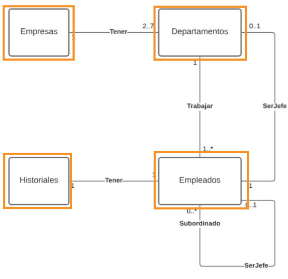
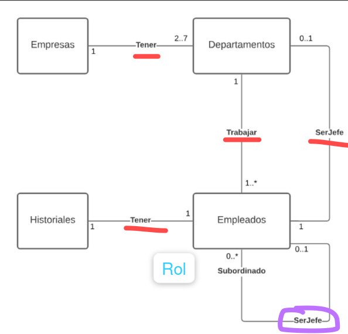
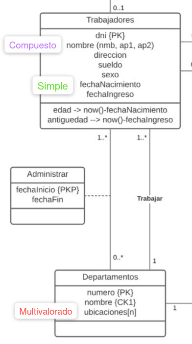
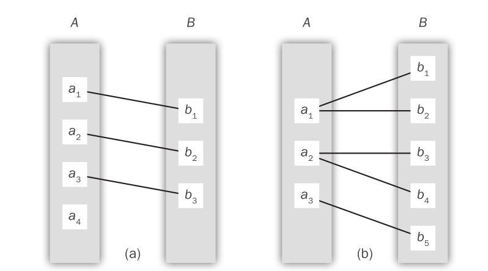
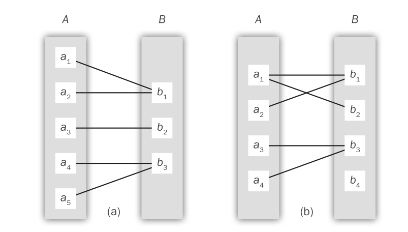
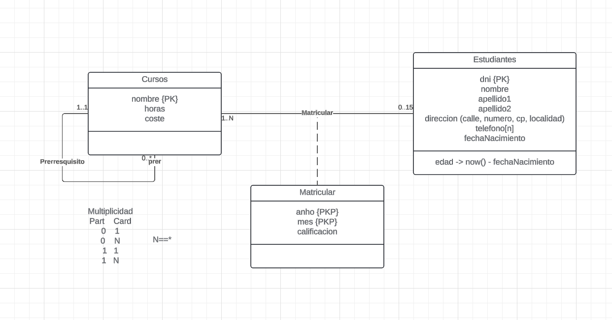
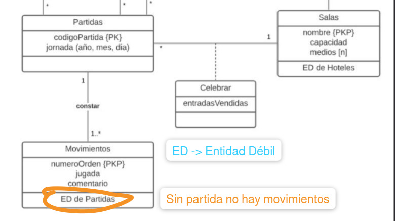
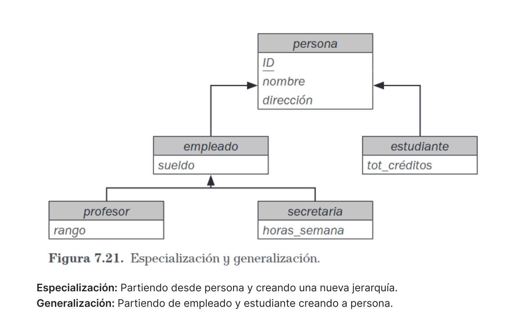

MODELO ENTIDAD RELACIÓN
Escrito por Adrián Quiroga Linares. adrianql5
El Modelo Entidad Relación es una técnica de diseño de arriba a abajo.
1.1 Diseño de una Base de Datos.
El proceso de diseño se divide en 4 fases:
-
Fase Inicial: el diseñador debe realizar una caracterización de las necesidades de datos de los posibles usuarios. Debe relacionarse con expertos y usuarios del dominio para realizar la tarea. Y así obtenemos una especificación de requisitos del usuario.
-
Fase de diseño conceptual: se escoge el modelo de datos y traducimos los requisitos en un esquema conceptual de base de datos. Este esquema realizado en esta fase de diseño conceptual proporciona una visión general de la empresa. En este esquema representamos: Conjuntos de Entidades, Conjuntos de Relaciones, Atributos y Restricciones.
-
Fase de especificación de requisitos funcionales: se describen los tipos de operaciones o transacciones que se llevarán a cabo sobre los datos.
-
Fase final:
-
Fase de Diseño-Lógico: Traduce el esquema Conceptual en un esquema de Relación.
-
Fase de Diseño-Físico, se especifican las características físicas de la base de datos. El esquema físico es fácilmente modificable, sin embargo las del esquema lógico mas complejo de modificar.
-
Transacción: es la descripción de un operación a llevar a cabo sobre los datos almacenados en la BD. Puede implicar tanto la creación, modificación, consulta o eliminación de los datos.
Se pueden obtener varios diseños completos y sin redundancia. Sin embargo se puede decir que tiene mayor calidad aquel que restrinja al máximo las opciones que no se deberían poder realizar.
Debemos evitar dos peligros:
- Redundancia: es importante no repetir información para tener un buen diseño. El mayor problema de la información repetida es que al actualizar la información, puede quedar alguna copia sin actualizar y se podría confundir todo.
- Incompletitud: ouede hacer que sea muy difícil modela algunos aspectos.s
1. 2 Modelo Entidad Relación
Emplea 3 conceptos básicos, los conjuntos de entidades, los conjuntos de relaciones y los atributos. Tiene asociada una representación en forma de diagramas.
1.2.1 Conjuntos de Entidades
Una entidad es una cosa/objeto del mundo real distinguible. Esta entidad es identificable de forma unívoca. Pueden ser concretas (Personas) o abstractas (Reserva de un vuelo).
Un Conjunto de Entidades es un grupo de objetos con existencia física o conceptual (entidades).
La Extensión de un conjuntos de entidades se refiere a la colección real de entidades que pertenecen al conjunto de entidades en cuestión.

1.2.2 Conjuntos de Relaciones
Una Relación es una asociación entre varias entidades. La relación Tutor, asocia a la entidad profesor con la entidad alumno.
Un Conjuntos de Relaciones es un conjunto de relaciones del mismo tipo (2 entidades mínimo).
La asociación entre conjuntos de entidades se conoce como participación. Los conjuntos de entidades E1, E2 ..., En pariticpan en el conjunto de relaciones R.
La función que desempeña una entidad en una relación se denomina rol. Los roles suelen ser implícitos y no se especifican. Sin embargo, si en una relación intervienen entidades de un mismo conjunto desempeñaran diferentes roles. Este caso se denomina Conjunto de Relaciones Recursivo.

El conjunto de relaciones es binario si, involucra a solo 2 conjuntos de entidades. Si involucra a 3 terciario, etc. El número de conjuntos de entidades que participan en un conjunto de relaciones es el grado de ese conjunto de relaciones.
1.2.3 Atributos
Son propiedades de las entidades y las relaciones de interés para la misión de la base de datos, solo se incorpora a la BD aquellos atributos que sean necesarios.
Para cada atributo hay un conjuntos de valores permitidos llamado dominio.
-
**Atributos simples (DNI)
-
Atributos compuestos (formados a partir de varios simples) (fecha)
-
Monovalorados (solo toman un valor)
-
Multivalorados (pueden tener un conjunto de valores) (teléfono, una persona puede tener varios números de teléfono)
-
Derivados (su valor se puede obtener a partir del valor de otros atributos o entidades relacionados, el valor de estos atributos nunca se almacena). Los atributos además pueden tomar valores nulos.

1.3 Restricciones
Las restricciones determinan la semántica de la BD, es decir, su comportamiento. Una base de datos con los mismo conjuntos de entidades y relaciones será diferente si sus restricciones son diferentes.
La multiplicidad es el rango de Entidades de un Conjunto de Entidades que puedes relacionarse mediante un Conjunto de Relaciones , con una Entidad de otro Conjunto de Entidades. El máximo de este rango es la Cardinalidad y el mínimo la Participación.
1.3.1 Correspondencia de cardinalidades
Expresa el número de entidades a las que otra entidad se puede asociar mediante un conjunto de relaciones.
-
Uno a uno: Cada entidad de A se asocia, a lo sumo con una de B y viceversa.
-
Uno a varios: cada entidad de A se asocia con cualquier número de entidades de B. Cada entidad de B se puede asociar, a lo sumo, con una de A.
-
Varios a uno: cada entidad de A se asocia a lo sumo con una de B. Sin embargo, cada entidad de B se puede asociar con cualquiera de A.
-
Varios a varios: cada entidad de A se asocia con cualquiera de B y viceversa


## 1.3.2 Restricciones de Participación Se dice que la **participación** de un conjunto de entidades *E* en un conjunto de relaciones *R* es **total** si cada entidad de *E* participa, al menos en una relación de *R*.Si solo algunas entidades de E participan en relaciones de R, se dice que la participación del conjunto E en R es parcial.
1.3.3 Claves
Clave Primaria: Todo conjunto de entidades debe tener un clave primaria. Una clave primaria es un conjunto mínimo de atributos que tienen valores difrentes para cada entidad en cada conjunto de entidades. La clave primaria debe mantener su condición de valores diferentes en el pasado, presente y futuro. La estructura de las claves primarias de un conjunto d relaciones depende de la correspondencia de cardinalidad del conjunto.
Super Clave: conjunto de atributos que diferencia a una entidad del resto. Clave Candidata: posible clave primaria. Para escoger la clave primaria debemos escoger de entre todas las claves candidatas la minimal (la que esté formada por menor número de atributos).
1.4 Atributos Redundantes
Cada atributo que describe una propiedad de un conjunto, está sólo una vez en el Modelo, y además está en el conjunto de entidades o en el de relaciones al que pertenece. Si hace falta el atributo en otro lugar se obtiene a través de una relación.
1.5 Diagramas Entidad-Relación

Otro concepto nuevo es el de conjunto de entidades fuertes o débiles, las débiles necesitan la existencia de un conjunto de entidades fuertes. Se dice conjunto de entidades débiles a aquel conjunto de entidades que no tiene atributos suficientes que le permitan formar una clave primaria. Si tienen clave primaria son conjuntos de entidades fuertes.
La relación que asocia a conjuntos de entidades fuertes y débiles se llama relación identificadora.
Aunque los conjuntos de entidades débiles no tienen clave primaria, hace falta un medio para distinguir entre todas las entidades del conjunto de entidades débiles que dependen de una entidad fuerte concreta. El discriminador (clave parcial) de un conjunto de entidades débiles es un conjunto de atributos que permite que se haga esta distinción.

1.6 Modelo Entidad-Relación Extendido
Los conjuntos de entidades pueden incluir subgrupos de entidades que se diferencian de alguna forma de las demás entidades del conjunto. Las subclases tienen las mismas entidades que las superclases pero agrupadas en base al cumplimiento de alguna característica. Este proceso de establecimiento de subgrupos dentro del conjunto de entidades se denomina especialización.
Solemos decir que existe una jerarquía entre este grupo que engloba a los otros subgrupos. Por ejemplo, tenemos al conjunto personas sin embargo lo podemos desglosar en alumnos y profesores.
Tipos de jerarquías:
- Solapada total: todas las entidades deben pertenecer a un subconjunto y alguna puede pertenecer a varios.
- Solapada parcial: algunas entidades pueden no pertenecer a ningún subconjunto y alguna puede pertenecer a varios.
- Disjunta total: todas las entidades deben pertenecer a un subconjunto y solo puede aparecer en ese subconjunto.
- Disjunta parcial: algunas entidades pueden no pertenecer a ningún subconjunto pero las que aparecen no pueden estar presentes en subconjuntos diferentes.
Además existe herencia de atributos, los atributos de la superclase son heredados por los de la subclases. Las subclases además heredan la participación en los conjuntos de relaciones en los que participa su superclase
La generalización es la relación de contención que existe entre el conjunto de entidades de nivel superior y uno o varios de nivel inferior. Para crear generalizaciones los atributos deben tener un nombre común y representarse mediante la entidad de nivel superior.
Se puede entender como el proceso contrario a la especialización. En la especialización se "segmenta" una superclase y en la generalización se "juntan" varias subclases para construir una superclase.

Además podemos diferenciar entre jerarquía y retículo, en la jerarquía un conjunto de entidades dado sólo puede estar implicado como conjunto de entidades de nivel inferior en una relación, es decir, tienen herencia única. Retículo: si un conjunto de entidades es de nivel inferior en más de una relación tiene herencia múltiple y se denomina retículo.
Restricciones a las generalizaciones:
-
Definida por el atributo (o por la condición): la pertenencia a una subclase se evalúa en función del cumplimiento de una condición, es decir, se evalúan en función del mismo atributo.
-
Definida por el usuario: las subclases no están restringidas por una condición de pertenencia, si no que el usuario asigna las entidades a un conjunto dado.
-
Restricción de completitud: especifica si una entidad de la superclave debe pertenecer al menos a unos de los conjuntos (total) o no (parcial).
A mayores contamos con la Agregación: Las agregaciones generan conjuntos de entidades de nivel conceptual superior, agrupando conjuntos de entidades relacionadas mediante conjuntos de relaciones en un concepto único. Su objetivo fundamental es poder establecer conjuntos de relaciones entre conjuntos de relaciones.
Se puede pensar como relacionar un conjunto de relaciones con otro para obtener así atributos de varios conjuntos de entidades, evitando aumentar el grado de las relaciones. Como máximo deberíamos tener relaciones de grado 3 y después usar la agregación.
Definiciones
Entidad: Objeto, de un determinado tipo, identificable de forma unívoca.
Conjunto de Entidades: Grupo de objetos de un tipo, con las mismas propiedades, que se identifican en la Base de Datos como poseedores de una existencia independiente.
Relación: Asociación identificable de forma unívoca que incluye una Entidad de cada uno de los Conjuntos de Entidades participantes.
Conjuntos de Relaciones: Grupo de relaciones entre Entidades de Conjuntos de Entidades Participantes.
Grado de un Conjunto de Relaciones: número de Conjuntos de Entidades que participan en las Relaciones individuales del Conjunto de Relaciones.
Atributo: propiedad de un Conjunto de Entidades que participan en las Relaciones individuales del Conjunto de Relaciones.
Dominio de Atributo: Conjunto de valores permitido para el Atributo.
Multiplicidad: Rango (número mínimo y número máximo) de Entidades de un Conjunto de Entidades que puede relacionarse, mediante un Conjunto de Relaciones, con una Entidad de otro(s) Conjunto(s) de Entidades.
Participación: Determina si todas, o sólo parte de las Entidades de un Conjunto de Entidades que pueden relacionarse, mediante un Conjunto de Relaciones. Es el mínimo rango de la Multiplicidad.
Cardinalidad: Describe el número máximo de Entidades de un Conjunto de Entidades que pueden relacionarse una Entidad de otro(s) Conjunto(s) de Entidades a través de un Conjunto de relaciones. Es el máximos del rango de la Multiplicidad. Correspondencia de Cardinalidades: Cardinalidades correspondientes a los conjuntos de entidades participantes en un Conjunto de Relaciones.
Clave Candidata: conjunto mínimo de atributos que identifican de forma unívoca cada Entidad dentro de un Conjunto de Entidades.
Clave Primaria: Clave candidata seleccionada por el diseñador.
Conjunto de Entidades Fuerte: Conjunto de Entidades que no depende de ningún otro Conjunto de Entidades.
Conjunto de Entidades Débil: Conjunto de Entidades que depende existencialmente de otro Conjunto de Entidades.
Superclase: Conjunto de Entidades que incluye uno o más subgrupos diferentes en sus Entidades, los cuáles es preciso representar en el Modelo de datos.
Subclase: Subgrupo diferenciado de Entidades de un Conjunto de Entidades, que necesita ser representado en el Modelo de datos.
Herencia de Atributos en Jerarquías: Las Subclases de una jerarquía poseen los atributos de su Superclase (sin necesidad de indicarlo explícitamente).
Restricción de Participación: Determina si todo miembro de la Superclase debe participar, o no, como miembro de una Subclase.
Restricción de Disyunción: Indica si es posible que un miembro de una Superclase puede ser miembro de varias Subclases o sólo puede ser miembro de una Subclase.
Agregación: Conjunto de Entidades de nivel conceptual superior compuesto por un Conjunto de Relaciones entre Conjuntos de Entidades.